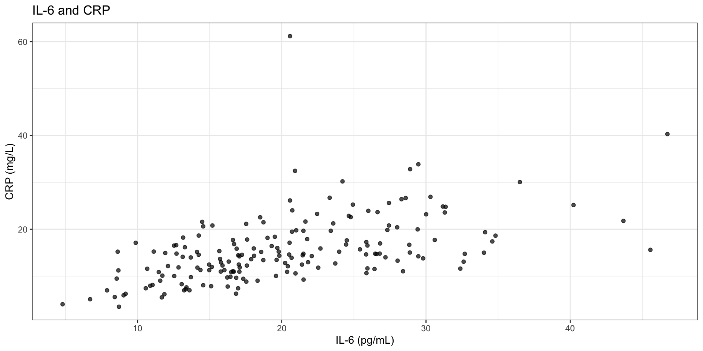
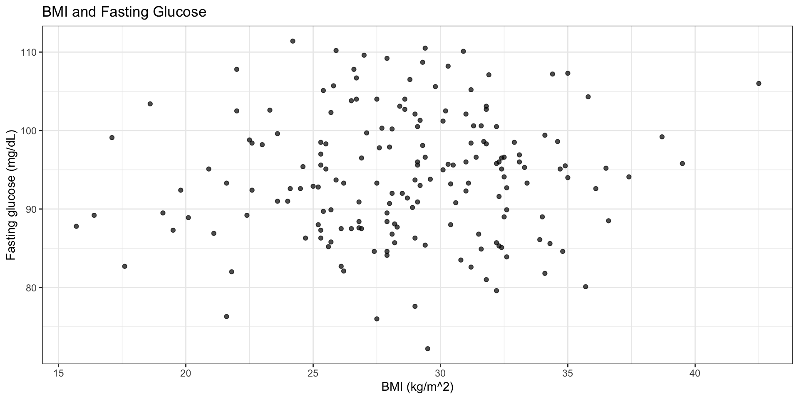
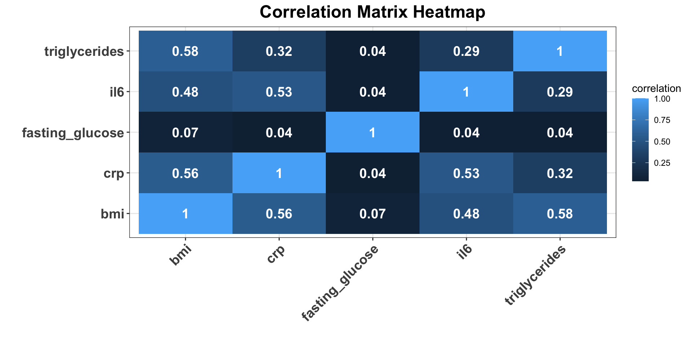

# A tibble: 8 × 5
bmi il6 crp fasting_glucose triglycerides
<dbl> <dbl> <dbl> <dbl> <dbl>
1 27.9 11.9 6.15 84.6 210.
2 34.1 43.7 21.8 99.4 213
3 32.9 32.6 13.1 98.5 208.
4 32.2 30.0 23.2 85.7 213.
5 30.6 20.7 13.9 90.8 222.
6 17.1 13.7 9.79 99.1 159.
7 31.1 20.6 26.1 93.3 229.
8 27.9 13.3 16.2 84.1 226.Descriptive Analysis of Biological Relationships Across Multiple Measures
Lesley Chapman Hannah, Ph.D., M.S.
College of Graduate Studies
Northeast Ohio Medical University
Lecture Overview
- using scatter plots as a display of two variables
- distinguish between visual association and formal causal or adjusted modeling claims
- compute and interpret Pearson correlations
- summarize multivariable relationship structure using a correlation matrix and heatmap
Descriptive Correlation Analysis
correlation describes association between variables and helps identify key structure in data
correlation quantifies the strength and direction of a linear relationship between two continuous variables
correlation summarizes how two variables co-vary relative to their variability
descriptive statistics and correlation estimates : sample-based approximations of underlying population relationships
Descriptive Correlation Analysis
correlation helps identify:
- coordinated biological processes
- redundancy between measurements
- candidate biomarkers that move together
Examples:
- inflammatory markers rising together during immune activation
- gene expression levels co-regulated across pathways
- clinical measures that reflect shared disease burden
Key Terms
association : descriptive statement that two variables vary together in the observed sample
correlation : numerical summary of the strength and direction of linear association between two quantitative variables
scatter plot : graph of paired quantitative observations in which each point represents one observational unit measured on both variables
correlation matrix : table of pairwise correlations across several quantitative variables
heatmap : color-based display of values in a matrix that helps the analyst see larger structural patterns quickly
Example: Describing and Exploring Relationships
Background Leading a cohort study measures inflammation and metabolic status in adults at baseline
Analysis Goal(s)
- evaluate whether biomarkers tend to move together across individuals
- characterize whether these relationships appear strong, weak, or clustered within subgroups
Descriptive analysis supports the following aims:
- identify biomarkers that rise together across patients
- detect potential redundancy among predictors before regression modeling
- assess whether simple linear summaries adequately describe relationships
- flag unusual observations or subgroup structure that may influence downstream analyses
Example: Describing and Exploring Relationships
Goals:
evaluate relationships among biomarkers, we require a dataset that captures multiple measurements per individual within the same observational frame
each participant contributes a multivariate profile consisting of inflammation, adiposity, and metabolic markers measured at baseline
examine how biological measurements co-vary across individuals
Key Observations using correlation analysis:
- strength of linear relationships between variables
- direction of association (positive or negative)
- consistency of relationships across the cohort
Simulated Dataset Overview
simulated dataset represents a cohort of adults with baseline measurements across key physiological domains:
adiposity: body mass index [BMI]inflammation: interleukin-6 [IL-6], C-reactive protein [CRP]metabolic function: fasting glucose, triglycerides
each row corresponds to a single participant, and each column represents a continuous biomarker
variables form a joint measurement space in which each participant is represented by a vector of values:
\[ Participant_i = (BMI_i, IL6_i, CRP_i, Glucose_i, Triglycerides_i) \]
Visualizing Pairwise Relationships with Scatter Plots
scatter plot: tool for examining the relationship between two continuous variables measured on the same individual or observation
each point represents a single participant, positioned according to their values on both variables
full collection of points display how the two measurements co-vary across the cohort
Scatter plots allow one to observe:
- direction of association [whether values increase or decrease together]
- strength of association [how tightly points align along a trend]
- variability around the relationship [degree of dispersion]
- presence of subgroups or unusual observations
Evaluating Scatter Plots
When comparing two measurements or variables, focus on:
- Direction: Does the overall pattern increase, decrease, or show no clear trend?
- Form: Does the relationship appear approximately linear, or is there curvature?
- Strength: Are the points tightly concentrated around a trend or widely dispersed?
- Structure: Are there visible clusters that may reflect subgroups, clinical strata, or batch effects?
- Unusual observations: Are there points that deviate markedly from the overall pattern?
IL-6 and CRP Scatter Plot

Interpretation
scatter plot displays the relationship between IL-6 [pg/mL] and CRP [mg/L] across participants variables that reflect inflammatory activity
each point in the plot represents one participant with both IL-6 and CRP measured
plot shows positive association between CRP and IL-6:
- as IL-6 increases from ~5 to ~45 pg/mL \(\rightarrow\) CRP generally increases from ~5 to ~30 mg/L
- higher IL-6 is associated with higher CRP levels
- points follow an upward trend but are not tightly clustered
BMI and Fasting Glucose Scatter Plot

This plot shows how metabolic burden and glycemic measurements vary together at baseline.
Plot interpretation
- a positive trend suggests that higher BMI tends to be associated with higher fasting glucose in this sample
- the association appears weaker than a near-deterministic relationship because the points still show substantial vertical spread
- this is typical in biomedical data, where one exposure or trait contributes to an outcome without fully determining it
Pearson Correlation Coefficient
Pearson correlationquantifies the strength and direction of a linear relationship between two quantitative variables by taking their covariancedescriptive summary of linear co-variation across individuals
Metric helps answer:
- Do individuals with higher values of one measurement tend to also have higher (or lower) values of another?
- How consistently does that pattern occur across the sample?
Measures:
- strength of association: how tightly observations cluster
Pearson Correlation Coefficient
Pearson Correlation [r]:
\(|r|\) close to 1 → strong linear relationship
\(|r|\) close to 0 → weak linear relationship
\(r > 0\) [positive association] Higher values of one variable tend to occur with higher values of the other [i.e.: BMI and fasting glucose increasing together]
\(r < 0\) [negative association] Higher values of one variable tend to occur with lower values of the other [i.e.: drug dose and symptom severity decreasing]
\(r \approx 0\) [no linear association] No consistent linear pattern across individuals
R Code Example: Computing a Single Correlation
Interpretation
cor()base R function that computes the sample Pearson correlation coefficient- computes Pearson correlation coefficient using all paired observations of IL-6 and CRP across individuals
- \(r = 0.53\): individuals with higher IL-6 levels tend to also have higher CRP levels
- moderate positive linear relationship between IL-6 and CRP
Pairwise Pearson Correlations
corr_df |>
summarise(
cor_il6_crp = cor(il6, crp),
cor_bmi_glucose = cor(bmi, fasting_glucose),
cor_bmi_triglycerides = cor(bmi, triglycerides)
)# A tibble: 1 × 3
cor_il6_crp cor_bmi_glucose cor_bmi_triglycerides
<dbl> <dbl> <dbl>
1 0.529 0.0717 0.580Interpretation
- three pairwise Pearson correlations - summary of pairwise linear association across the sample
IL-6 and CRP
cor_il6_crp: \(r = 0.529\)
- quantifies the strength of the inflammatory marker relationship seen in the IL-6 versus CRP scatter plot
- moderate positive linear association
- IL-6 is a cytokine that induces CRP production in the liver
BMI and Fasting Glucose
cor_bmi_glucose:\(r = 0.0717\)
- quantifies the degree to which adiposity and glycemic burden move together linearly
- very weak linear association and no biological relationship between variables
Pairwise Pearson Correlations
corr_df |>
summarise(
cor_il6_crp = cor(il6, crp),
cor_bmi_glucose = cor(bmi, fasting_glucose),
cor_bmi_triglycerides = cor(bmi, triglycerides)
)# A tibble: 1 × 3
cor_il6_crp cor_bmi_glucose cor_bmi_triglycerides
<dbl> <dbl> <dbl>
1 0.529 0.0717 0.580Interpretation
- three pairwise Pearson correlations - summary of pairwise linear association across the sample
BMI and Triglycerides
cor_bmi_triglycerides : \(r = 0.580\)
- summarizes the linear association between BMI and triglycerides
- larger positive values indicate stronger positive linear association in the sample
- positive linear association
- individuals with higher BMI tend to have higher triglyceride levels
Correlation Matrix
bmi il6 crp fasting_glucose triglycerides
bmi 1.00 0.48 0.56 0.07 0.58
il6 0.48 1.00 0.53 0.04 0.29
crp 0.56 0.53 1.00 0.04 0.32
fasting_glucose 0.07 0.04 0.04 1.00 0.04
triglycerides 0.58 0.29 0.32 0.04 1.00correlation matrix:
- structured summary of all pairwise linear relationships among the continuous variables in the dataset
- summary of joint structure of relationships across many variables simultaneously
- each row [or column] shows how one variable relates to all others
Interpretation
diagonal entries are all 1 because each variable is perfectly correlated with itself
consistent pattern where BMI, inflammatory markers [IL-6, CRP], and triglycerides tend to increase together across individuals
Largest off-diagonal values:
- BMI–Triglycerides: 0.58 → moderate-to-strong positive association
- BMI–CRP: 0.56 → moderate positive association
- IL-6–CRP: 0.53 → moderate positive association
- BMI–IL-6: 0.48 → moderate positive association
Correlation Matrix
bmi il6 crp fasting_glucose triglycerides
bmi 1.00 0.48 0.56 0.07 0.58
il6 0.48 1.00 0.53 0.04 0.29
crp 0.56 0.53 1.00 0.04 0.32
fasting_glucose 0.07 0.04 0.04 1.00 0.04
triglycerides 0.58 0.29 0.32 0.04 1.00Interpretation
Weak or Absent Relationships
- glucose with all variables: ~0.04–0.07
- fasting glucose shows little to no linear association with the other measurements in this dataset
Redundancy and Feature Overlap
very high correlations [i.e.: \(r > 0.8\)] suggest:
- potential redundancy in predictors
Factors that high correlation could impact:
- regression modeling [multicollinearity]
- feature selection
- dimensionality reduction
Heatmap of the Correlation Matrix

Interpretation
- tile : one pair of variables and one pairwise correlation
- tile numbers: exact correlation of a pair of variables
- summarizes the pairwise Pearson correlations among five variables: BMI, CRP, fasting glucose, IL-6, and triglycerides
Moderate Positive Associations
- moderate clustering of metabolic and inflammatory markers
- BMI and triglycerides: r≈0.58
- BMI and CRP: r≈0.56
- CRP and IL-6: r≈0.53
- BMI and IL-6: r≈0.48
Heatmap of the Correlation Matrix

Interpretation
Minimal Associations
- fasting glucose remains largely uncorrelated [r ≈ 0.04–0.07]
- fasting glucose shows little to no linear association with the other markers in this dataset
Summary
correlation: quantifies relationship between variables while summarizing the strength and direction of linear association between variables using the Pearson correlation coefficient𝑟scatter plots show how continuous measurements co-vary across individuals, allowing us to assess direction, strength, variability, and potential subgroup structure
correlation matrices and heatmaps extend displays multiple variables simultaneously
- reveal clusters of related biological processes
- highlight redundancy among predictors
descriptive analysis identifies structure in biomedical data and guides hypothesis generation, feature selection, and model building